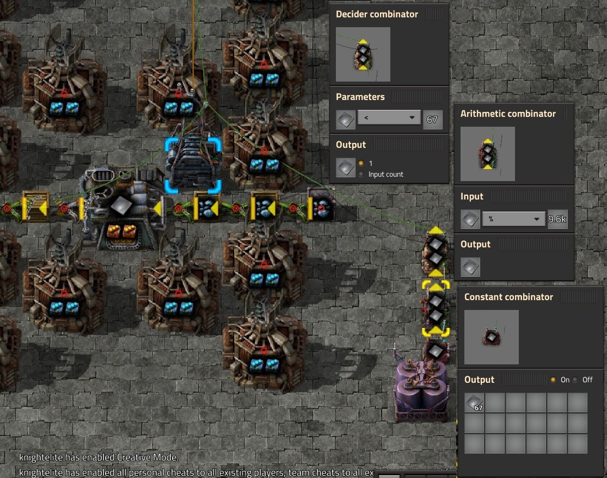
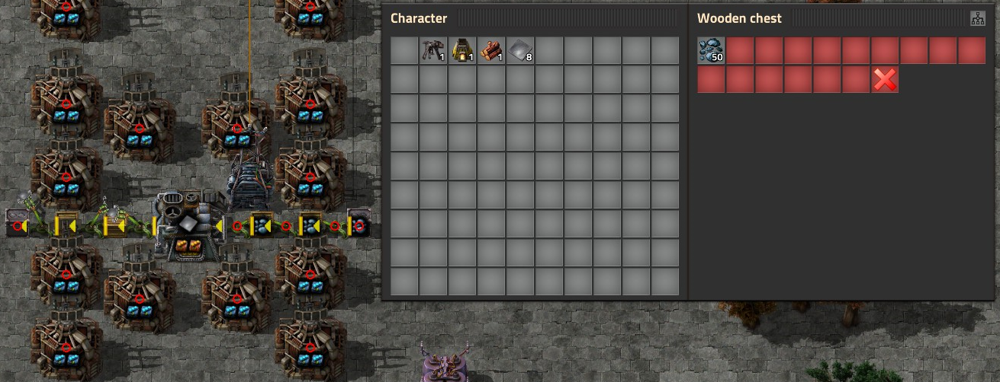
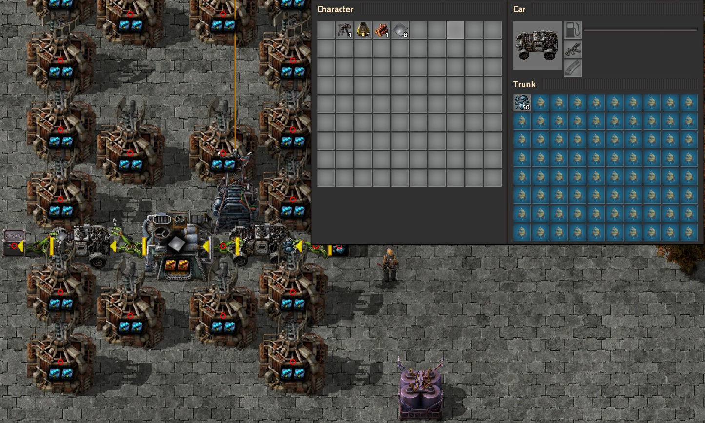
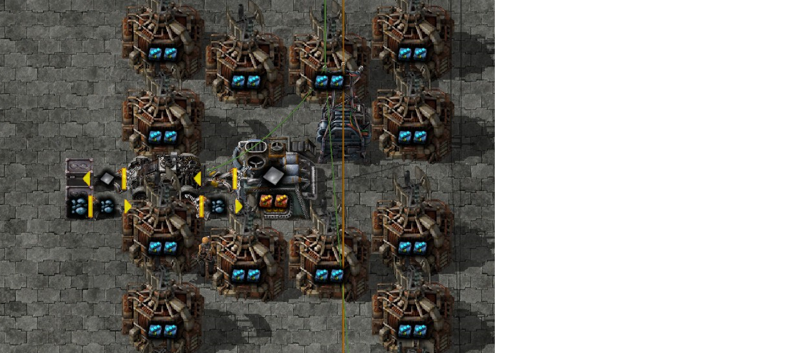
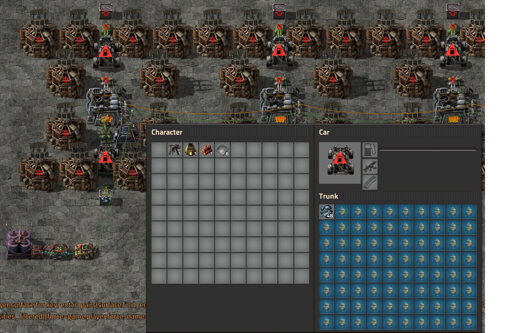
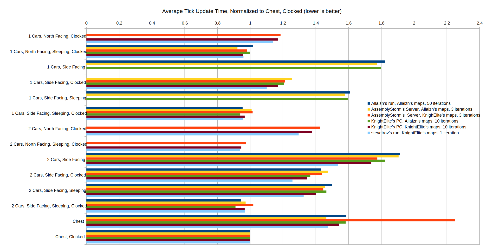

Clocking furnace output filter inserters using set filter is very worthwhile, with 50% or better performance improvement.
Chest - Inserter - Chest is significantly better than cars when the cars are in active state. Cars are slightly better than chests on most PCs if they are sleeping, which can currently only be done via console command.
Which is better as an intermediate for loading to and from trains in a 12-beacon setup, cars or chests? And how much of a difference does clocking furnace output make?
To measure this, I created a suite of test maps with 10000 12-beacon iron furnaces (with productivity modules) using Region Cloner. Ore is supplied from infinity chests (mimicking trains bringing it in) and voided to infinity chests (mimicking trains picking it up). Then Allaizn made a separate suite of maps using a square layout instead of the long line I had used originally; I've included results from his maps as well. This resulted in quite a few variations of the test maps (12 from KnightElite, 11 by Allaizn), so here are their meanings:
Clocked: Uses the circuit network to reduce processing time spent on inserters. Indicates the output stack inserter from the furnace has been replaced with a filter stack inserter in whitelist mode connected to the circuit network in "set filter" mode; all the furnace output inserters are connected to the same circuit network wire. With productivity modules factored in, a 12-beacon furnace generates an iron plate every approximately 0.199 seconds. To pick up 12 plates per swing we want to swing approximately every 2.388 seconds, or every 143.28358 ticks, which is an approximation of the true timing of 9600/67 ticks per swing. The combinators used for clocking makes use of this ratio to synchronize to the output rate of the furnace by having a constant combinator set to output 67, an arithmetic combinator set to modulo(%) 9600 with its output connected back to its input as well as to a decider combinator set to "<67, output 1 Iron Plate". This is expected to produce a significant UPS savings by reducing the number of inserters swings, and because filter inserters go to sleep when they have no filter set and are in whitelist mode since version 0.17.29.
Chest: Indicates the input to and output from the furnace using the sequence of: Infinity Chest - Inserter - Wooden Chest - Inserter - Wooden Chest - Inserter - Furnace. Wooden chests are limited to a single stack. Wooden chests are chosen since containers with a lower number of slots are more performant, and are limited to a single stack for the same reason.
2 Cars: Indicates the the input to and output from the furnace using the sequence of: Infinity Chest - Inserter - Car - Inserter - Furnace. Separate cars are used for input to and output from the furnace. Cars are set to have 79 slots filtered to fish, and one unfiltered slot to mimic the behavior of chests (Allaizn's maps filtered the last slot to the appropriate material).
1 Cars: Indicates the the input to and output from the furnace using the sequence of: Infinity Chest - Inserter - Car - Inserter - Furnace. A single car is use for both input to and output from the furnace. Cars are set to have 78 slots filtered to fish, one slot filtered to iron ore and one slot filtered to iron plates. Filter stack inserters are used instead of stack inserters. This is necessary because by using the same car for input and output we need to prevent the inserters from just voiding ore directly, or from loading iron plates back into the furnace. To get this to work, the car needs to be placed prior to placing the beacon so the inserters correctly target the car as their pickup source rather than the beacon (inserters can add/remove modules from beacons, so beacons are valid targets).
Facing: Only applies to cars; indicates which direction the front of the car is facing. North Facing cars face North, Side Facing face either East (Allaizn's maps) or West (KnightElite's maps).
Sleeping: Only applies to cars; indicates the cars on the map have been put to sleep via the following console command:
/c
for _, ent in pairs(game.player.surface.find_entities_filtered{name = "car"}) do
ent.active = false
end
Unfortunately as of version 0.17.32 this is the only way to put cars to sleep. Sleeping cars can be seen as sleeping via the "show-active-state" option from the debug menu.
 Data was collected by several people for this test. Thanks to Allaizn, AssemblyStorm and stevetrov for also running the benchmarks. Data is normalized to the speed of the "Chest, Clocked" test to remove absolute variability in computer performance from the analysis.
There are several takeaways from looking at this:
All maps will be uploaded here.
It was already known prior to this that clocking furnace output inserters made a significant difference, but it wasn't known how much exactly. The change from version 0.17.29 which allows filter inserters to sleep when no filter is set makes a huge difference in performance when used to clock inserters on the output of furnaces. Further investigation is required to see how much of a difference it makes on faster or slower productions cycles; furnaces make the maximum difference due to the inserters swinging essentially constantly without clocking, though only picking up one or two plates per swing.
It was also unknown how much worse on performance cars were than chests , and how much of a difference putting cars to sleep would make to performance. We now know that sleeping cars are slightly better than chests in cases where they reduce the inserter count (and way better than non-sleeping cars), but that if there is an option to use cars or chests (and command line to set cars to sleep is not available) then chests are faster in 0.17.32. If cars were changed to go to sleep when stationary, this test should be rerun to confirm that the cars perform the same as they do when put to sleep from the console.
This also shows it may be worth further investigating the North-facing vs. non-North facing cars cases, as the results were not close enough to make a judgement in this test.
{kind=link}